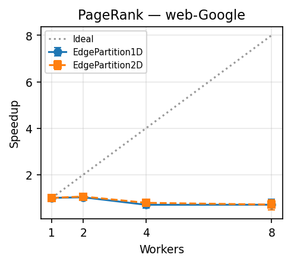
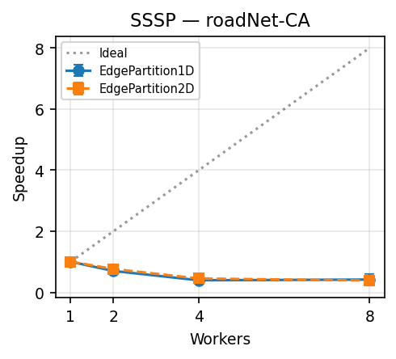
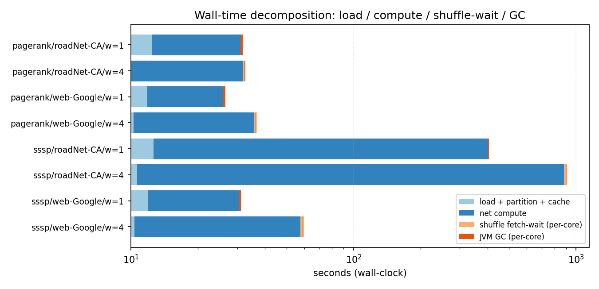
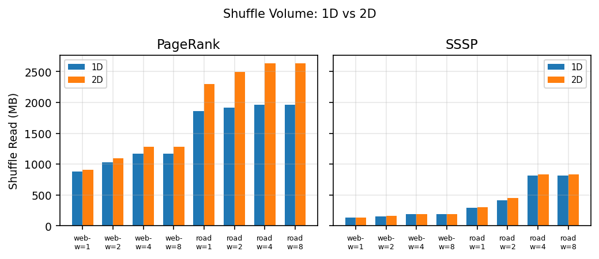

A benchmarking study of Apache Spark + GraphX on a five-node Jetstream2 cluster — PageRank for web ranking, SSSP for road routing.
Most published GraphX work measures gains on billion-edge graphs. We characterize the lower bound — where distribution begins to cost more than it returns.
Pages with many links from important pages rank higher. Power-iteration on a hyperlink graph, 20 iterations, reset probability 0.15.
Engineering decision modeled: nightly re-computation of authority scores on a 5M-edge web subgraph — single VM or cluster?
Single-Source Shortest Path via Pregel BSP, unit weights, label-propagation until quiescence — distances from one depot to all intersections.
Engineering decision modeled: regional logistics planner needs depot-to-everywhere distances on a real road graph.
| Dataset | Vertices | Edges | Topology | Diameter | On-disk |
|---|---|---|---|---|---|
| web-Google | 875,713 | 5,105,039 | Power-law (hubs) | ~24 | ~75 MB |
| roadNet-CA | 1,965,206 | 5,533,214 | Near-uniform (deg ≈ 2–4) | 726 | ~88 MB |
| Role | Instance | vCPUs | RAM |
|---|---|---|---|
| Master | m3.xlarge | 16 | 60 GB |
| Worker 1 | m3.large | 8 | 30 GB |
| Worker 2 | m3.large | 8 | 30 GB |
| Worker 3 | m3.large | 8 | 30 GB |
| Worker 4 | m3.large | 8 | 30 GB |
| Total | — | 48 | 180 GB |
/srv/sparkdata — datasets loaded once, cached in memorymetrics.json; reruns skip completed cells. Total wall clock for the 64-cell delta: ~3h 45m.SparkListener → 1 KB JSON per run. Welford's online variance avoids OOM on 155K-task SSSP runs.app/src/main/scala/ecc/Algos.scaladef runPageRank[VD: ClassTag, ED: ClassTag]( graph: Graph[VD, ED], numIter: Int): String = { val ranked = graph.staticPageRank(numIter, resetProb = 0.15) // force materialization; top-5 = lightweight checksum val top5 = ranked.vertices.top(5)(Ordering.by(_._2)) val total = ranked.vertices.map(_._2).sum() // optional: dump full rank vector for the convergence study sys.env.get("ECC_DUMP_RANKS_DIR").filter(_.nonEmpty).foreach { dir => ranked.vertices.map { case (id, r) => s"$id\t$r" }.saveAsTextFile(dir) } f"top5=[$top5];sum=$total%.6f" // sum should ≈ |V| → confirms convergence }
|V|.app/src/main/scala/ecc/Algos.scalaval weighted = graph .mapEdges(_ => 1.0) .mapVertices { (id, _) => if (id == srcId) 0.0 else Double.PositiveInfinity } val sssp = weighted.pregel( initialMsg = Double.PositiveInfinity, maxIterations = Int.MaxValue, activeDirection = EdgeDirection.Out )( vprog = (_, dist, newDist) => math.min(dist, newDist), sendMsg = triplet => { val candidate = triplet.srcAttr + triplet.attr if (candidate < triplet.dstAttr) Iterator((triplet.dstId, candidate)) else Iterator.empty }, mergeMsg = (a, b) => math.min(a, b) // commutative + associative )
scipy.sparse on the master vs. Spark on 1 worker — same algorithm, just no distribution.

| Cell | Wall (s) | Compute | GC % | SW % | Tasks |
|---|---|---|---|---|---|
| PR/road · w=1 | 31.7 | 18.6 | 2.1 | 0.0 | 1,168 |
| PR/road · w=4 | 32.7 | 21.9 | 1.2 | 1.3 | 4,672 |
| SSSP/road · w=1 | 405.1 | 387.7 | 1.2 | 0.0 | ~39 K |
| SSSP/road · w=4 | 911.7 | 871.2 | 0.6 | 2.7 | 154,926 |


spark.locality.wait defaults to 3 seconds — assuming HDFS-style data locality. We read from NFS. Locality doesn't exist.| Configuration · PR/web-Google/1D/w=4 | Wall time (n=5) | Algo time (n=5) | Δ |
|---|---|---|---|
Default · locality.wait = 3s | 37.6 ± 8.7 s | 26.0 ± 7.7 s | — |
Tuned · locality.wait = 0s | 25.7 ± 0.8 s | 15.2 ± 0.3 s | −31.7% |
locality.wait=0 is mandatory. It's a real-world configuration trap.| Threat (named in midterm) | Status | How addressed |
|---|---|---|
| Sample size — only 3 trials, no CIs | Closed | Now 5 trials per cell · 95% Student-t CIs (n=5, t=2.776) on every metric. |
| No non-distributed baseline | Closed | scipy.sparse single-process baseline on master · same algorithm · 5 trials × 4 cells. |
| Did PageRank actually converge at 20 iters? | Closed | Convergence study at iters 10/15/20/25/30 · top-1 stable by iter 10; rank values still drifting. |
| 2D partitioner null result vs PowerGraph | Closed | Reframed as scope-bound: max-degree 456 ≪ PowerGraph's regime (≥ 10⁴). |
| w=8 = co-located workers, not horizontal scale | Reframed | Pulled into its own "executor density" subsection · explicit caveat. |
summary_agg.csv.Anyone with our codebase, the SNAP datasets, and a Jetstream2 allocation can rerun the full pipeline with one command. Idempotent harness · pinned versions · SHA256-tagged dataset freeze.